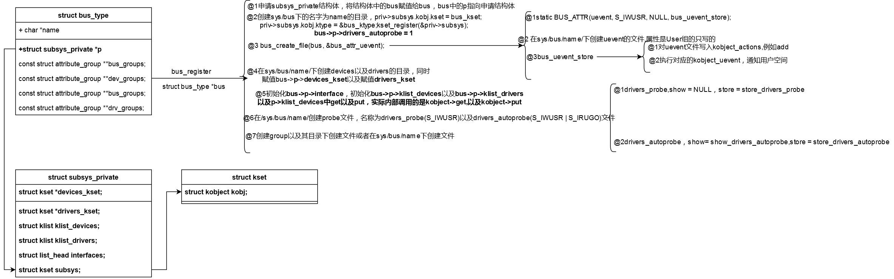

相关的文件：linux-3.16.82\linux-3.16.82\drivers\base\bus.c linux-3.16.82\linux-3.16.82\include\linux\device.h
初始化:
int __init buses_init(void)
{
/*动态的创建在/sys/下创建bus目录*/
bus_kset = kset_create_and_add("bus", &bus_uevent_ops, NULL);
if (!bus_kset)
return -ENOMEM;
/*动态的创建system目录，父节点是devices_kset，即/sys/devices/system*/
system_kset = kset_create_and_add("system", NULL, &devices_kset->kobj);
if (!system_kset)
return -ENOMEM;
return 0;
}
相关的结构体:
struct bus_type {
const char *name;
const char *dev_name;
struct device *dev_root;
struct device_attribute *dev_attrs; /* use dev_groups instead */
const struct attribute_group **bus_groups;
const struct attribute_group **dev_groups;
const struct attribute_group **drv_groups;
/*device 与driver 匹配函数，调用driver_register或者是bus_add_driver 会进行match*/
int (*match)(struct device *dev, struct device_driver *drv);
int (*uevent)(struct device *dev, struct kobj_uevent_env *env);
/*driver 或者是bus 上定义了probe，不能同时生效，如果bus上定义了probe，则不调用drv->probe*/
int (*probe)(struct device *dev);
int (*remove)(struct device *dev);
void (*shutdown)(struct device *dev);
int (*online)(struct device *dev);
int (*offline)(struct device *dev);
int (*suspend)(struct device *dev, pm_message_t state);
int (*resume)(struct device *dev);
/*电源管理相关，通过赋值其fops，对总线上的设备进行电源管理*/
const struct dev_pm_ops *pm;
struct iommu_ops *iommu_ops;
struct subsys_private *p;
struct lock_class_key lock_key;
};
struct subsys_private {
struct kset subsys;
struct kset *devices_kset;
struct list_head interfaces;
struct mutex mutex;
struct kset *drivers_kset;
/*存放着所有总线上的devices，通过bus_add_device*/
struct klist klist_devices;
/*存放着所有总线上的drivers，通过bus_add_driver或者driver_register*/
struct klist klist_drivers;
/*bus_notifier,使用bus_register_notifier, 会在device_add,device_bind_driver时通知，发出一些事件*/
/*#define BUS_NOTIFY_ADD_DEVICE 0x00000001 /* device added */- #define BUS_NOTIFY_DEL_DEVICE 0x00000002 /* device removed */
- #define BUS_NOTIFY_BIND_DRIVER 0x00000003 /* driver about to be bound */
- #define BUS_NOTIFY_BOUND_DRIVER 0x00000004 /* driver bound to device */
- #define BUS_NOTIFY_UNBIND_DRIVER 0x00000005 /* driver about to be unbound */
- #define BUS_NOTIFY_UNBOUND_DRIVER 0x00000006 /* driver is unbound from the device */
struct blocking_notifier_head bus_notifier;
/*自动probe，添加driver到bus上时会自动match device，假如为真，表示要match，否则不进行device与driver的绑定，默认是1*/
unsigned int drivers_autoprobe:1;
struct bus_type *bus;
struct kset glue_dirs;
struct class *class;
};
重要的API
int bus_register(struct bus_type *bus)
void bus_unregister(struct bus_type *bus)
